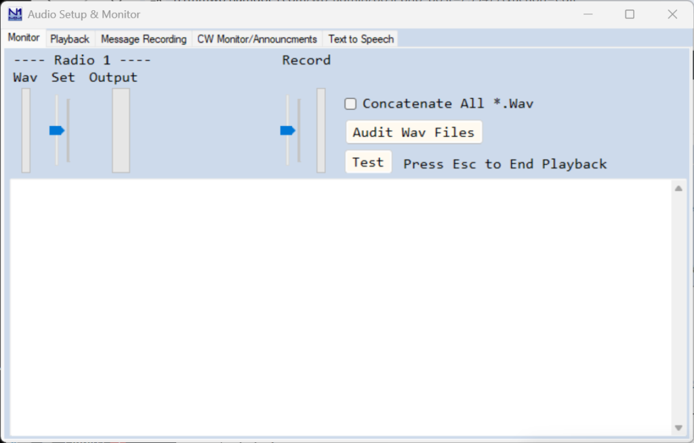
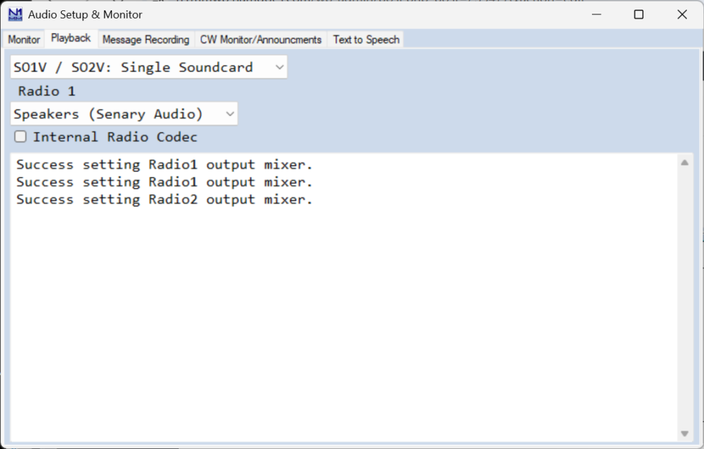
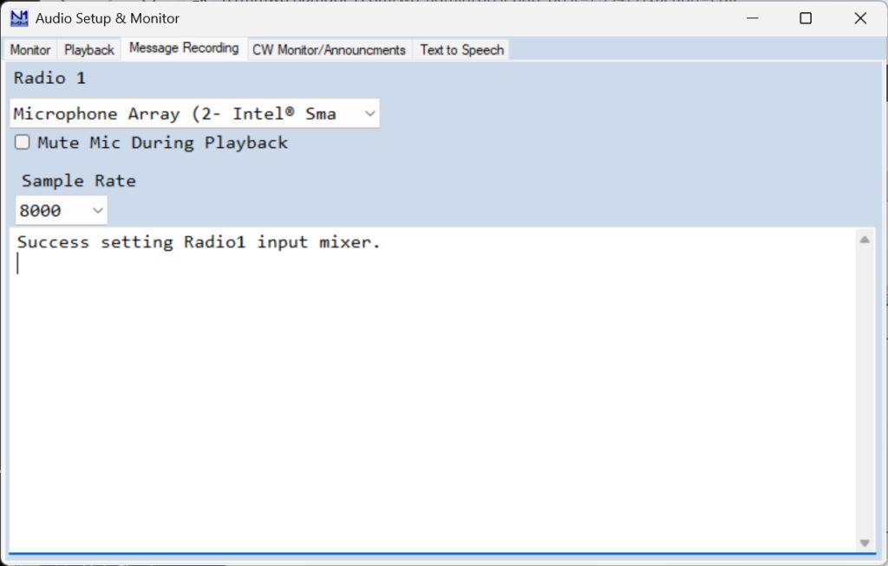
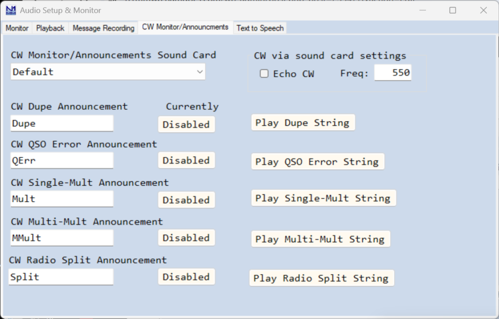
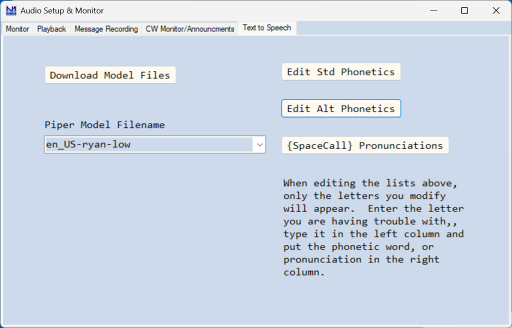

Audio Setup Window EN: Audio Setup Window
Para usuários com Windows Vista ou versões mais novas, é aqui que você configura as opções de áudio das funções de Logger+ Audio. Essas funções incluem reprodução e gravação "na hora" de mensagens de voz gravadas pelo usuário (arquivos wav); monitoramento do seu CW enviado pelo computador e anúncios em código Morse do status do QSO (útil para operadores com deficiência visual); e a opção de text-to-speech, que gera mensagens de voz a partir de texto usando um dos vários modelos de voz disponíveis.
Se você usa Windows XP, esta janela não estará disponível. Nesse caso, o áudio é configurado na aba Audio do Configurer (essa aba não existe em versões mais novas do Windows rodando versões atualizadas do Logger).
Monitor Tab (Aba de Monitoramento)
Esta aba abre sempre que você acessa a janela Logger+ Audio Setup pelo menu Config > Logger+ Audio Setup... na Entry window.

O controle deslizante à esquerda (Set) ajusta o nível de saída enviado ao seu rádio. Ajuste-o para que o rádio mostre o nível de microfone e a compressão corretos. Ao tocar um arquivo .wav, o medidor estreito "Wav" mostra o nível relativo dos picos da gravação sendo tocada. O medidor largo "Output" mostra os picos da saída enviada ao rádio. Os dois são independentes; se o medidor do Wav mostrar picos relativamente baixos, considere regravar o arquivo para melhorar a relação sinal-ruído.
O controle deslizante à direita (Record) ajusta o nível de gravação para a gravação "na hora", e o medidor estreito ao lado mostra o nível relativo do som sendo gravado.
Ao fechar o N1MM+, os níveis de saída da(s) placa(s) de som e de entrada do(s) microfone(s) voltam às configurações anteriores.
Quando há vários arquivos wav a enviar em sequência, como ao locucionar indicativos e números seriais a partir de arquivos individuais de letra/número, o comportamento padrão é enviar os arquivos um após o outro. Alguns usuários relataram atrasos longos e inaceitáveis entre arquivos wav sucessivos nesses casos. Para isso, existe a opção Concatenate All *.Wav, que monta a mensagem inteira concatenando os arquivos wav individuais em um único arquivo wav temporário antes de enviá-lo, em vez de enviar um de cada vez. Diferente do comportamento padrão, alterações feitas no indicativo na Entry window depois que o envio já começou não são refletidas na saída, com esta opção ativa. Além disso, todos os arquivos wav precisam ter a mesma taxa de amostragem e resolução de bits. Se você tiver atrasos longos entre letras e números que não sejam explicados por "silêncio morto" gravado no início/fim dos arquivos, tente esta opção para ver se ela resolve.
Para usar a locução de indicativos e números seriais com arquivos wav pré-gravados de letras e números individuais, o botão Audit Wav Files verifica se o programa encontrou um conjunto completo dos arquivos necessários para a locução simples ou avançada.
O botão Test toca uma mensagem pré-gravada, para testar sua configuração de reprodução sem precisar gravar algo primeiro.
O painel inferior desta aba lista cada mensagem armazenada enviada, útil para depuração.
Playback Tab (Aba de Reprodução)

Na primeira caixa de opções, a primeira escolha usa uma única placa de som para SO1V/SO2V. As outras 3 são para SO2R: SO2R Single Soundcard Mono (um controlador externo roteia o áudio entre os rádios), SO2R Single Soundcard L/R (um canal para cada rádio), e SO2R Two Soundcards Mono (cada placa de som ligada a um rádio).
Na segunda caixa, selecione o dispositivo de reprodução (Playback) que alimenta o áudio ao seu rádio. As opções mostradas dependem da configuração do seu computador.
Um número crescente de rádios tem "placas de som" internas, chamadas de CODECs. Se o seu tiver uma e você quiser usá-la, marque a caixa Internal Radio Codec, e, para controle de PTT, marque também PTT via Radio Command SSB Mode na configuração da porta de controle de rádio no Configurer. Obviamente, você não pode usar um único CODEC de rádio para mais de um rádio, então a primeira opção precisa condizer com isso.
Usuários de modos digitais: se o seu rádio tem um CODEC interno que você quer usar para transmitir em modos digitais, incluindo AFSK RTTY, marque a caixa Internal Radio Codec mesmo que você não use as funções de áudio do N1MM+ em modos de voz. Além disso, a forma mais simples de controlar o PTT nesses rádios é marcar PTT via Radio Command Digital Mode na configuração da porta de controle de rádio no Configurer.
O painel inferior desta aba mostra as interações entre o N1MM+ e as funções de áudio do Windows.
Message Recording Tab (Aba de Gravação de Mensagens)

Esta aba varia conforme suas escolhas na aba Playback. Se você escolher SO2R com duas placas de som, será necessário escolher entradas para cada uma, para habilitar a regravação "na hora" de mensagens armazenadas.
As opções de Sample Rate são 6000, 8000 e 12000, definidas aqui para a gravação "na hora" de arquivos wav.
O painel inferior relata o início e o fim de cada gravação "na hora".
Seu microfone é silenciado durante a reprodução se você marcar a opção Mute Mic During Playback.
CW Monitor/Announcements Tab (Aba de Monitoramento de CW/Anúncios)

Esta aba é usada tanto para habilitar o monitoramento audível do seu CW enviado pelo computador, quanto para configurar e habilitar anúncios audíveis em CW do status do QSO (dupe, multiplicador, erro e status de split). Esses anúncios são úteis para operadores com deficiência visual.
Na caixa CW Monitor/Announcements Sound Card, escolha a saída de placa de som do computador usada para monitorar o CW enviado e para os anúncios de status do QSO, se habilitados. Normalmente deve ser diferente da placa de som configurada na aba Playback.
Para habilitar o monitoramento de CW, marque a caixa Echo CW.
O tom do monitoramento audível de CW e dos anúncios pode ser definido no campo Freq:; normalmente, use a mesma frequência do sidetone do seu transceptor.
Existem cinco anúncios em código Morse que podem ser habilitados ou desabilitados individualmente: QSO Dupe, Erro de QSO, um único multiplicador, múltiplos multiplicadores (dois ou três), e QSO em split. O estado habilitado/desabilitado é salvo por operador. O usuário pode digitar o texto a ser enviado em cada um dos cinco anúncios. Há botões Play para cada anúncio, para prévia. A velocidade desses anúncios em WPM segue a velocidade de CW configurada na Entry window; os anúncios são enviados na mesma velocidade do seu CW transmitido. O nível de áudio da reprodução é ajustado no painel de áudio do Windows. Nota: alguns contests exigem que o exchange seja conhecido antes de determinar o status de Dupe.
Text to Speech Tab (Aba de Texto-para-Voz)
Esta aba configura a opção de text-to-speech, introduzida na versão 1.0.10913.0 do N1MM Logger+. Ela usa software para gerar fala a partir de mensagens de texto, usando um dos vários modelos de voz disponíveis. A fala gerada é colocada em um arquivo wav temporário, tocado imediatamente.
Há vários (27) modelos de voz disponíveis para download de dentro da janela Audio Setup. Também é possível criar um modelo de voz personalizado usando a sua própria voz (as instruções para isso fogem do escopo deste documento, mas podem ser baixadas no site do N1MM Logger+).
O programa (piper.exe) que converte texto em voz é baixado junto com o primeiro modelo de voz baixado. É necessária conexão com a Internet durante o download do programa e dos modelos, mas depois de baixado ao menos um modelo, o recurso de text-to-speech funciona sem Internet.
O programa piper.exe, que converte texto em voz, não lida bem com caracteres Unicode não-ASCII em nenhum ponto do caminho dos arquivos. Se o nome do seu usuário do Windows tiver caracteres assim (letras acentuadas, cirílicas etc.) e sua área de arquivos de usuário/dados do N1MM+ estiver no local padrão dentro de Documents, o piper.exe não conseguirá ler nem gravar os arquivos que precisa. O sintoma é uma ou mais mensagens de erro na janela Audio Setup dizendo que arquivos não foram encontrados.
A solução é parecida com a de problemas com o OneDrive: a área de arquivos de usuário/dados precisa ser instalada em um novo local sem caracteres não-ASCII no caminho — por exemplo, C:\Ham\N1MM Logger+. Primeiro, crie o novo diretório. Depois baixe o N1MM+ Full Installer e o instalador da atualização mais recente (na página Downloads do site do N1MM+). Rode o Full Installer (não é preciso desinstalar antes). Quando o instalador pedir o local da área de arquivos de usuário, use o botão Browse para apontar para o novo diretório criado. Depois da instalação completa, não rode o N1MM+ ainda. Primeiro, copie o conteúdo da sua área de arquivos de usuário original (incluindo subpastas) para a nova área. Depois rode o instalador de atualização para instalar a versão mais recente. Se houver caminhos nos arquivos de configuração apontando para a área antiga, atualize-os para a nova área — fora isso, o N1MM+ deve continuar funcionando normalmente, mas agora o piper.exe conseguirá ler e gravar os arquivos de que precisa.

O botão Download Model Files... baixa o programa Piper de text-to-speech e um ou mais modelos de voz pela Internet. Depois do primeiro modelo baixado, você pode optar por parar, baixar o próximo modelo, ou baixar o conjunto completo de 27 modelos. O conjunto completo ocupa 1,65 GB em disco e demora bastante para baixar, dependendo da sua conexão — para testes iniciais, considere parar depois de um ou dois modelos em vez de baixar tudo de uma vez.
A caixa Piper Model Filename seleciona um modelo de voz entre os já baixados ou modelos personalizados adicionados. Os arquivos de modelo ficam na subpasta PiperModelFiles, na área de arquivos de usuário do N1MM+, e o programa Piper que faz o processamento de text-to-speech fica na subpasta Piper. Essas subpastas são criadas pelo atualizador do programa a partir da versão 1.0.10913.0, mas ficam vazias até que pelo menos um modelo de voz seja baixado.
Existem macros para usar dois conjuntos de alfabetos fonéticos para locucionar indicativos: o padrão (ICAO) e um conjunto alternativo. Como alguns modelos de voz podem ter dificuldade em pronunciar certas fonéticas ou letras claramente, há botões para fornecer grafias alternativas (ou "erradas de propósito") que ajudam o modelo de voz.
O botão Edit Std Phonetics permite fornecer uma grafia alternativa da fonética padrão para uma ou mais letras, quando o modelo de voz usado não pronuncia bem a grafia normal.
O botão Edit Alt Phonetics oferece a mesma capacidade para o conjunto alternativo de fonéticas, e também pode substituir a palavra usada originalmente por outra.
O botão {SpaceCall} Pronunciations oferece uma capacidade semelhante para as letras individuais usadas ao soletrar indicativos com a macro {SpaceCall}.
Setup and Testing (Configuração e Testes)
Para testar este recurso, primeiro baixe um ou mais modelos de voz e selecione o que deseja testar. Vá na aba Playback e defina a saída de placa de som para a que você vai usar para ouvir durante o teste (por exemplo, a placa de som padrão do seu PC, ou a usada para monitoramento e anúncios de CW), em vez da placa usada para transmitir durante um contest. Com o programa em modo Phone, edite uma das mensagens de tecla de função para incluir uma macro TTS, por exemplo:
F10 Call,{TTS {ICAO !}}
para falar o indicativo do campo de indicativo em fonético padrão (ICAO), ou:
F10 Num,{TTS 1 2 3 4 5 6 7 8 9 0}
para falar os dígitos de 1 a 0 em sequência. Salve o conjunto de mensagens editado e pressione a tecla de função para ouvir o resultado. Use isso para testar diferentes modelos de voz e textos (grafias diferentes, por exemplo). Satisfeito com a escolha do modelo de voz e das mensagens, lembre-se de trocar de volta a placa de som da aba Playback para a usada com seu transmissor.
TTS Macros (Macros de Texto-para-Voz)
Existem oito macros usadas em mensagens de tecla de função para TTS:
{TTS}, {ICAO}, {AltICAO}, {SpaceCall}, {SpaceNR}, {SplitNR}, {TTSParms} e {TTSTrim}
{TTS texto} – Converte o "texto" em fala e toca imediatamente o arquivo wav de TTS gerado.
- Pode haver várias macros {TTS} em uma mesma mensagem
- Macros {TTS} não podem ser combinadas com arquivos wav na mesma mensagem
- A velocidade de reprodução pode ser alterada com a macro {TTSParms} (veja abaixo)
- As macros {ICAO}, {AltICAO}, {SpaceCall}, {SpaceNR} e {SplitNR} são usadas dentro de macros {TTS}, como descrito adiante
- O texto da macro {TTS} pode conter as macros # (número serial) e @ (frequência de recepção). Números seriais usando # são locucionados como números únicos, por exemplo 1256 vira "one thousand two hundred fifty six". Para locuções alternativas de números seriais, veja {SpaceNR} e {SplitNR} abaixo
- As macros ! ou {CALL} (indicativo da outra estação) e * ou {MYCALL} (seu indicativo) só devem ser usadas dentro de macros ICAO. Usá-las em outro lugar pode dar resultados indesejados — o programa pode tentar pronunciar o indicativo, ou parte dele, como se fosse uma palavra em inglês
- O texto da macro {TTS} pode conter , . ? e espaço, para modificar a fala e o espaçamento. Não coloque esses caracteres de atraso de fala fora da macro {TTS}
- Um espaço é adicionado quando um espaço e uma palavra com maiúscula seguem um ponto final
- Vírgulas na mensagem podem ser usadas para adicionar uma pequena pausa
- Adicionar vários espaços seguidos não aumenta a pausa entre palavras
- Em alguns casos, "erros de grafia" propositais podem melhorar a fala
- Para soletrar letras sem fonética, como em siglas, pode ajudar separá-las com espaços, como em "R I T", ou escrevê-las por extenso, como em "are eye tee"
- A letra A é um caso especial. Alguns (senão todos) os modelos de voz interpretam um A isolado como o artigo indefinido "a" em inglês, e não a letra "A", pronunciando como um "ah" curto. Escrever como "ehy" em vez de "A" costuma funcionar melhor
{ICAO texto} – Converte o "texto", ou * (seu indicativo) ou ! (indicativo da outra estação), para o fonético ICAO padrão. Só é usada dentro de uma macro {TTS}. A macro {ICAO !} dentro de {TTS} equivale funcionalmente à macro {CALL} em CW e modos digitais; não é idêntica à macro ! ao usar locução com arquivos wav em modos de voz, pois o indicativo nas macros TTS não pode ser editado na hora.
- A macro {ICAO} pode aparecer várias vezes dentro de uma macro {TTS}
- Alguns modelos de voz podem não pronunciar certas fonéticas com clareza; nesse caso, uma grafia alternativa da palavra usada na fonética pode melhorar a clareza. O botão Edit Std Phonetics na janela de configuração oferece essa opção
{AltICAO texto} – Uma versão alternativa da macro {ICAO}, usando outro conjunto de fonéticas (America, Boston, Canada, Denmark...). O botão Edit Alt Phonetics na janela de configuração permite grafias diferentes para melhorar a clareza, ou substituir palavras (Amsterdam em vez de America, por exemplo).
- O alfabeto fonético alternativo é pensado para soletrar conteúdo variável, como o indicativo da outra estação. Também é possível usá-lo para texto fixo, como seu próprio indicativo, seção, gridsquare etc., mas isso não é realmente necessário, já que você pode soletrar esses diretamente com a fonética ou grafia que preferir
{SpaceCall} – Locuciona o indicativo da Entry window com foco, como letras individuais separadas por espaços. Só é usada dentro de uma macro {TTS}, no lugar da macro {CALL} usada em CW e modos digitais.
- Você usaria {SpaceCall} em F5 se quisesse responder chamadores sem fonética:
F5 Call,{TTS {SpaceCall}} envia K3CT como "kay three see tee", por exemplo - Algumas letras recebem tratamento especial. Por exemplo, como os modelos de voz podem pronunciar um "A" isolado como o artigo indefinido em vez da letra A, a letra A é trocada por "ehy" ao locucionar com {SpaceCall}. Se outro tratamento especial for necessário para essa ou outra letra, use o botão {SpaceCall} pronunciations na janela de configuração
{SpaceNR} – Locuciona o número serial como dígitos separados. Exemplo: 1256 vira "one two five six". Pode ser usada dentro de uma macro {TTS} no lugar da macro #.
{SplitNR} – Locuciona o número serial dividido em partes: um ou dois dígitos de ordem mais alta, e os dois dígitos finais. Pode ser usada dentro de {TTS} no lugar de #.
Exemplos:
1256 vira "twelve fifty-six"
984 vira "nine eighty-four"
Aviso: números seriais acima de 9999 não são bem tratados por {SplitNR}.
{TTSParms x,y,z} – Muda os parâmetros de locução que controlam velocidade de reprodução (x), variação de tom (y) e/ou aleatoriedade da locução (z). Um, dois ou os três parâmetros podem ser informados, exceto que, para especificar o terceiro (z), também é preciso especificar o segundo (y). Os parâmetros normalmente ficam na faixa de 0.0 a 1.0, usando "." como separador decimal (vírgula como separador decimal não é permitido dentro da macro TTSParms).
- Combinações possíveis: {x}, {x,y}, {x,y,z}, {,y} e {,y,z}. {x,,z} e {,,z} não são permitidas
- As mudanças de parâmetro valem para a mensagem atual e para as seguintes, até serem sobrescritas por outra macro {TTSParms}
- Exceto depois de uma macro {END}, só é permitida uma macro {TTSParms} por mensagem de tecla de função
- As mudanças de {TTSParms} valem para a mensagem inteira (até, ou a partir de, uma macro {END}, se houver). A posição da macro {TTSParms} na mensagem não importa, exceto que uma segunda {TTSParms} pode ser colocada depois de um {END} para forçar sua execução depois que a parte anterior da mensagem for enviada. Isso permite enviar parte de uma mensagem em velocidade diferente do resto, por exemplo:
F10 Rpt Exch,{TTSParms 0.8}{TTS {SplitNR} P A}{END}{TTSParms 1.0}{TTS {SpaceNR} Pennsylvania}
- Velocidade de reprodução (parâmetro length_scale no piper.exe): faixa de 0.3 a 1.0. Números menores = velocidade maior. 1.0 produz a velocidade mais lenta (do próprio modelo de voz). Padrão inicial = 1.0
- Descontinuado: valores entre 3 e 10 ainda são aceitos, multiplicados por 0.1 antes de serem passados ao piper.exe
- Variação de tom (parâmetro noise_w no piper.exe): faixa de 0.0 a 1.0. Números menores = menos variação de tom, voz mais "plana". Números maiores = mudanças de tom mais expressivas. Padrão inicial = 0.8
- Aleatoriedade da locução (parâmetro noise_scale no piper.exe): faixa de 0.0 a 1.0. Números menores = menos variação, um pouco mais rápido, pode soar mais robótico. Números maiores = mais variação, um pouco mais lento. Não pode ser especificado sem também especificar a variação de tom. Padrão inicial = 0.66
{TTS_SPEED n} – Descontinuada; sinônimo de {TTSParms m}, onde m = 0.1*n. Muda a velocidade de reprodução das mensagens de voz atual e seguintes.
{TTSTrim} ou {TTSTrim n} – Corta o início e o fim da mensagem atual usando um valor de limiar. Sem valor informado, usa o limiar padrão de 1000. O limiar representa o nível do arquivo .wav considerado "silêncio" — quanto maior o número, mais ruído de fundo é removido no início e fim. Com o limiar informado, a faixa de n é 0 a 6000. Um valor alto demais pode cortar parte do início ou fim da mensagem.
Exemplo de arquivo de mensagens de tecla de função:
O empilhamento de chamadas (call stacking) funciona com TTS, como no exemplo acima. Veja como usar:
O programa precisa estar em modo Run, com ESM ligado.
Ajuste as teclas de função como preferir, por exemplo:
F11 LogPop,{LOGTHENPOP}{TTS Roger Now {ICAO !}, number # in Pennsylvania}
F8 Stack,{STACKANOTHER}
No Configurer, aba Function Keys, defina a tecla Next Call para a tecla com a macro {LOGTHENPOP} (F11 neste exemplo).
Digite um indicativo na Entry window e pressione a tecla {STACKANOTHER} (F8) para empilhá-lo. Se precisar, ajuste o tamanho da fonte e a posição da janela da pilha na tela.
Digite um segundo indicativo e pressione Enter para enviar a mensagem normal de exchange (F5+F2) e iniciar um QSO com essa estação.
Digite o exchange recebido e pressione Enter. Isso loga o QSO, retira o indicativo empilhado da pilha e envia a mensagem Next Call (F11) para iniciar o próximo QSO com a estação que acabou de ser retirada da pilha.
Digite o exchange recebido e pressione Enter para enviar a mensagem normal de TU (F3) e logar o segundo QSO.
Você pode empilhar vários indicativos, ou seu parceiro pode empilhá-los no modo Partner.
Notes (Notas)
- Não é possível tocar uma mensagem combinada contendo tanto uma macro TTS quanto um arquivo *.wav do usuário
- "mensagem combinada" inclui o exchange de Run enviado com Enter em ESM, ou com Insert ou ; (independente do status do ESM); em ambos os casos, a mensagem enviada combina as mensagens de F5 e F2, que portanto precisam ser do mesmo tipo
- "mensagem combinada" também inclui qualquer mensagem com uma macro {F1}-{F12}
- Com a opção "Send corrected call before end of QSO" marcada no Configurer, se a mensagem F3 usa arquivos wav, o programa tenta usar arquivos wav de letra/número para enviar o indicativo da outra estação, independente de F5 usar arquivos wav ou macros TTS
- Ao usar TTS, algumas macros de tecla de função podem interferir ou não funcionar (por exemplo, macros de log forçado não funcionam na mesma tecla que macros TTS)
- Com TTS em uso, a concatenação de áudio do Logger+ é desativada
- Com TTS em uso, o AutoStart (Autosend) é desabilitado, pois o indicativo inteiro precisa estar disponível antes de gerar uma mensagem que o contenha
- Ao converter o indicativo da Entry window em voz, qualquer alteração no indicativo depois de pressionar a tecla de função NÃO muda o indicativo transmitido
- O recurso de TTS pode não funcionar em CPUs de 32 bits
- Computadores lentos ou no limite podem ter atrasos na primeira vez que tocam uma mensagem, ou um atraso menor ao tocar um indicativo
- Quando uma mensagem TTS é tocada em velocidade de voz diferente da mensagem TTS anterior, há uma sobrecarga adicional de execução
- Você pode querer ter uma forma alternativa de enviar indicativo e exchange, além das F5 e F2 normais — por exemplo, usando {SpaceCall} ou {SpaceNR} em uma, e {ICAO !} ou # ou {SplitNR} na outra. Para manter o ESM sincronizado, pode ser útil colocar uma macro {EXCHSENT} na tecla de exchange alternativa. Veja a descrição de {EXCHSENT} na documentação de teclas de função e macros